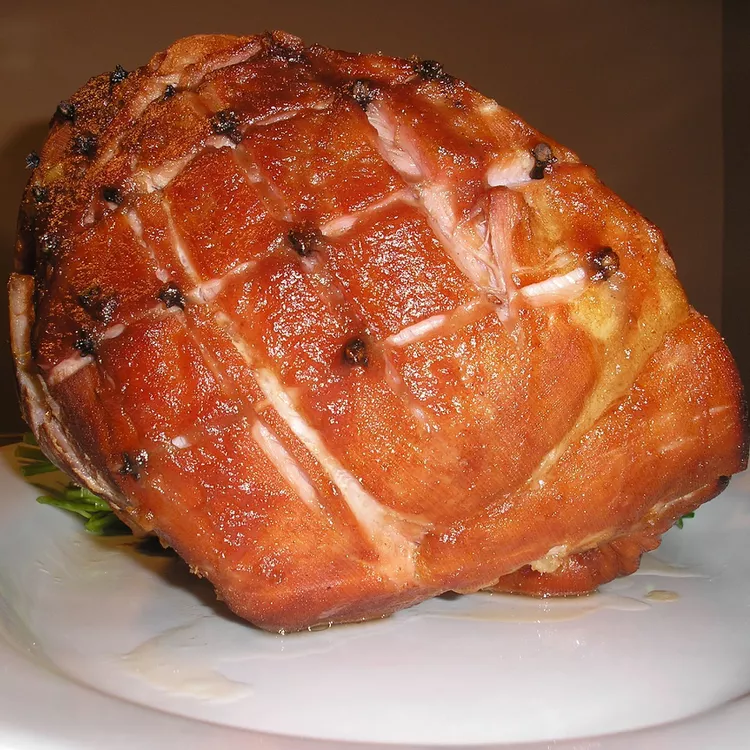

Glazed Ham

Description
This is the how you can make glazed ham for Christmas.
Ingredients
Meat Sauce:
- 1 (8 pound) bone-in shank ham
- 4 cups water, or as needed
- ½ cup honey
Steps
- Preheat the oven to 275 degrees F (135 degrees C). Place ham in a roasting pan. Pour in water to a 2 inch depth. Cover with a tight fitting lid.
- Bake for 6 to 8 hours in the preheated oven (all day or all night). Remove from the oven, pour off drippings and reserve. Debone ham, removing any excess fat as well, and return to the roasting pan.
- Skim fat from the top of the drippings, and discard.
- Bake for another 30 to 40 minutes in the preheated oven. Let stand for 10 minutes before serving.